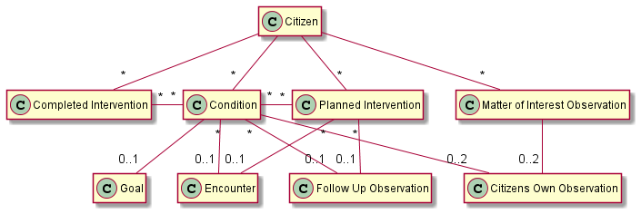

1.1.0 - release

1.1.0 - release

This page is part of the KL Gateway (v1.1.0: Release) based on FHIR R4. This is the current published version in its permanent home (it will always be available at this URL). For a full list of available versions, see the Directory of published versions 
| Official URL: http://fhir.kl.dk/gateway/ImplementationGuide/kl.dk.fhir.gateway | Version: 1.1.0 | |||
| Active as of 2023-06-21 | Computable Name: KLGateway | |||
This implementation guide describes the delivery of health and eldercare data to the KL Gateway. The reporting aims for compliance with the Danish core profiles and the current work on a shared information model (FKI) for data in the Danish municipalities.
The profiles for the reporting are restricted to allow only the information that is required to report to the KL Gateway. This will not be compliant with the shared information model for data in the Danish municipalities and FSII as it describes a subset where not all mandatory data is allowed.
The data contained in the reporting is a subset of the data defined in the Danish standard for eldercare and health data (FSIII, v. 1.6), with focus on structured information about conditions and care plans where all free text information is omitted. Enhancement of FSIII with training and rehabilitation is not in scope for this reporting.
An overview of the model of the delivery report content is provided in the following illustration:

Note: All resources refer to citizen in the bundle (some relations are omitted from the diagram to make it readable).
The reporting contains the following types of information:
Information about the citizen that is the subject of the report. The main information about the citizen is the civil registration number (CPR-nr) and identification of the municipality holding and reporting the data.
Information about the conditions (FSIII tilstande) of the citizen as assessed by the care practitioners. A condition represents an assessement of either a home care or a nursing condition and it must contain the level 2 condition code as defined by FSIII, the time that it was recorded, and a reference to an encounter with the follow-up date of the condition if it is known. Home care conditions must also contain the severity of the condition represented as the functioning level as defined by FSIII.
All information about conditions that has changed since the last reporting must be contained in a new report, including referenced follow-up encounters. Changes in the assessment may include conditions that are new, updated by a new assessment or no longer in relevant. A condition that has changed since previously reported shall have the same code according to FSIII and is considered to be an update to the assessment regardless of the id of the resource.
Free text information about the conditions is not part of this reporting.
Note: A potential problem at home care or nursing condition area level is not a condition. Matter of Interest observations are used for this.
Information about the goal (FSIII forventet tilstand) for each home care condition. The goal must contain the condition that the goal addresses and the expected severity as defined by FSIII. Only one goal for a home care condition must exist at a given time.
All changes to the goals since the last reporting must be included in a new report, including the referenced conditions and all the resources referenced by the conditions.
Free text information about the goals is not part of this reporting.
Information provided by the citizen about the conditions assessed by the care practitioners or a matter of interest. This includes the citizens own observation of their performance (FSIII udførelse) and the importance (FSIII betydning) of the condition or matter of interest in focus.
All changed to the observations sinces the last reporting must be contained in a new report, including the referenced conditions and all the resources referenced by the conditions.
Free text information about the citizens own observations is not part of this reporting.
Information about the planned interventions (FSIII indsatser) that the municipality has granted to address the conditions of the citizen. A planned intervention represents one type of care given to the citizen. It must contain the level 2 code for the intervention, the start time, the end time if ended, references to the conditions the intervention addresses if known, and a reference to an encounter with the follow-up date of the intervention if known.
A citizen may be granted several level 3 interventions for the same level 2 intervention. Level 3 interventions are reported using both the level 2 code and the locally defined level 3 code. Interventions are allowed to be overlapping to support this.
All changes to the planned interventions since the last reporting must be contained in a new report, including conditions and follow-up encounters referenced by the reported interventions.
Free text information about care plans is not part of this reporting.
Information about completed interventions (FSIII Indsatser) that the municipality has delivered acute or in any other way not as planned interventions. A completed intervention represents one type of care given to the citizen. It must contain the level 2 code for the intervention, references to the conditions the intervention addresses if known, and the start time of the delivery.
A completed intervention my be documented as a level 3 intervension. Level 3 interventions are reported using both the level 2 code and the locally defined level 3 code.
All changes to the completed but not planned interventions since the last reporting must be contained in a new report.
Free text information about care plans is not part of this reporting.
Information about matters of interest for home care or nursing condition areas (FSIII tilstandsområder). A matter of interest observation must contain the condition area, either home care or nursing, and the time of the observation.
All changes to the matter of interest observations since the last reporting must be included in a new report, including referenced follow-up encounters.
Free text information about area observations is not part of this reporting.
Information about the encounters referenced from conditions and care plans to hold the follow-up dates. The encounter must contain the expected start date of the next follow-up.
All referenced encounters from other resources in a report must also be included.
Free text information about encounters is not part of this reporting.
Information about the outcome of a follow-up encounter. The follow-up observations must contain the coding for the outcome (FSIII resultat af opfølgning) and a reference to condition or intervension about which the observation is made.
All changes to the follow-up observations since the last reporting must be included in a new report, including the conditions and intervensions referenced by the observations.
Free text information about the follow-up outcome is not part of this reporting.
Reporting is done using the profile KLGatewayCareDeliveryReport, which is a bundle containing multiple resources about one citizen. The source systems must periodically (at least daily) transfer a delivery report containing a snapshot of the current information for each changed citizen with all registrations that has changed since the previous delivery report was transferred. Multiple delivery reports must be delivered if the previous reporting for some reason happened more than one day ago, each covering no more than one day. A full history of changes is not required.
Note, that the snapshot of the current information contains information about the hole day, not only the current state for the citizen. An intervention that fx has ended during the day shall therefore be included in the report with an end date and time along with possible new interventions.
The id of any resource must be universally unique, e.g. a uuid. Resources with the same id as previously reported are considered to be an update of the previous reported information at the time indicated in the metadata of the resource. A resource that has been enterered in error is invalidated by an update with the same resource id as previously reported.
All resources must contain the metadata giving the profile and lastUpdated information.
The delivery report is immediately validated when a source system posts it to the gateway. The gateway validates all the rules defined in this profile for each delivery report and returns the list of errors found in the response. The gateway returns a machine readable error code if validation errors are found, and a textual description (not machine readable) of each error which explains the error in terms of the FHIR protocol.
The gateway thus validates that the format of the content is valid, the structure of all resources are correct, the cardinatity of all values are valid, codings only contains valid codes, and that all referenced resources are included in the report. The rules described on this page are validated to the extent possible through more complex constraints in the profiles. The constraints in the profiles also contains a textual description to describe the error when the validation finds that a constraint is not observed. This includes more technical validations not listed above, such as fixed values aligned with the shared information model (FKI) and the FHIR standard in general.
The gateway is not able to validate immediately whether the reported data conflicts with previously reported data. Problems like this will probably not be found until the data is processed for business intelligence or reporting to other recipients. Handling these problems will have to be a manual process. The gateway will for obvious reasons not be able to validate whether all the data from the source systems has been reported, including attributes with zero to one or zero to many cardinality marked as “must support”.
The implementation guide contains a number of examples for each profile used in a delivery report. See Delivery report example for an example of a complete delivery report.
Note: Must support markers are used according to the FHIR specification and means that it shall be included in the report if the information is available. A precise definition of what available means in each case is described in the definition of the element.